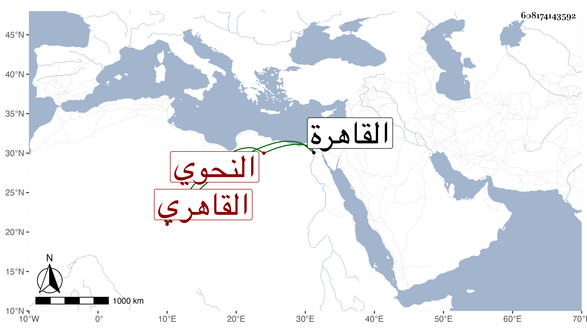

0902Sakhawi.DawLamic.ITO20230111-ara1.EIS1600.608174143592
Biography ID: 608174143592
288
محمد بن عبد الأحد بن علي الشمس القاهري النحوي سبط ابن هشام ويعرف بالعجيمي وسمي العيني والده عبد الأحد ، ذكره شيخنا في إنبائه وقال : أخذ عن خاله المحب بن هشام ومهر في الفقه والأصول والعربية ولازم العلاء البخاري لما قدم القاهرة وكذا لازم البدر الدماميني ، وكان كثير الأدب فائقا في معرفة العربية ملازما للعبادة وقورا ساكنا . مات في عشري شعبان سنة اثنتين وعشرين ودفن بالصوفية وكانت جنازته حافلة رحمه الله وإيانا .
